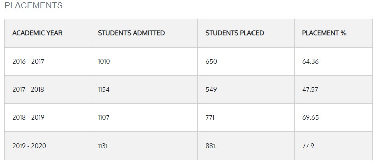

|
Considering the large number of students pursuing various courses from Vignan's Institute of Information Technology, Visakhapatnam, and Central Training & Placement Cell (CTPC) has been constituted. The Central Training & Placement Cell (CTPC) to cater to the needs of leading organizations in conducting campus interviews for the final year students. It is headed by a Training and Placement officers and supported by department placement coordinators. The cell is assisted by student representatives from various branches of study. The placement cell provides the best arrangements and hospitality to the HR team from various companies. The Central Training & Placement Cell (CTPC) endeavors to provide career development job oriented training to the students headed by experienced coordinators. Through this cell, program on Communication Development, Technical Aptitude, General Aptitude, and Personality Development, Group discussion, Memory power, Self confidence and Motivation are provided by expert professionals.The cell has been playing dual role of assessing ever-changing industrial requirements grooming and estimating inherent talents of the students.  |